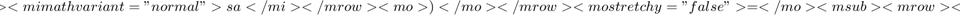

LINEAR SYSTEMS TUTORIAL
- Class: Psych 204B
- Tutorial: Linear Systems
- Author: Wandell
- Date: 3.31.04
- Duration: 30 minutes
- Copyright: Stanford University, Brian Wandell
This tutorial has a lot of reading at the front
- Checked: 10/13/09 JW
- Checked: 10/13/10 BW
** The equations look right in the MLX form. **
This tutorial introduces the student to the basic methods of linear systems theory, focusing on the tools of shift-invariant linear systems. The tutorial introduces the idea of superposition, shift-invariance, and impulse response functions. These ideas are fundamental to many methods and analyses used in functional neuroimaging and through engineering and science.
Linear systems theory is a method of characterizing certain types of common systems. A system is something that has an input and an output, and thus we can think of it as a function
output = L(input).
For example, the system might be an optical element, like a lens, that takes an image as an input and produces another image as an output. Or, this system may be a biological system that we are measuring, for instance the BOLD response that is the consequence of neural activity.
Characterizing the complete input-output properties of a system by exhaustive measurement is usually impossible. When a system qualifies as a linear system, it is possible to use the responses to a small set of inputs to predict the response to any possible input. This can save the scientist enormous amounts of work, and makes it possible to characterize the system completely.
Not all systems can be described using linear systems theory. To use linear methods to describe a system, it must satisfy the basic principle of superposition.
Contents
- The principle of superposition
- The hemodynamic response function (HRF)
- Impulses and shift-invariance
- Characterizing SIL systems
- Read and plot the SPM Hemodynamic response function (HRF)
- Make a pair of stimuli
- Plot the stimulus and output of a linear system with the SPM HRF
- Event-related design
- Block design experiments
- Example 1: Two events that are spaced 4 seconds apart
- Example 2: Two events that are spaced 2 seconds apart
- Example 3: 3 events that are spaced 2s apart
- Example 4: 5 stimuli given 2 seconds -> block which is 10 seconds long
- Thought Questions
The principle of superposition
The principle of superposition in words is simply this:
If the response to input A is Ra, and the response to input B is Rb, then the response to the sum of A and B (A+B) is the sum of the responses: Ra + Rb. In equation form this is
$$<math xmlns="http://www.w3.org/1998/Math/MathML" display="block"><mrow><mtable columnalign="left"><mtr><mtd><mrow><mi mathvariant="normal">If</mi><mtext>?</mtext><mtext>? </mtext><mtext>?</mtext><mtext>?</mtext><mtext>?</mtext><mtext>?</mtext><mi mathvariant="italic">L</mi><mrow><mo>(</mo><mrow><mi mathvariant="italic">a</mi></mrow><mo>)</mo></mrow><mo>=</mo><msub><mrow><mi mathvariant="italic">R</mi></mrow><mrow><mn>1</mn></mrow></msub><mi mathvariant="italic">a</mi></mrow></mtd></mtr><mtr><mtd><mrow><mi mathvariant="normal">and</mi><mtext>?</mtext><mtext>?</mtext><mi mathvariant="italic">L</mi><mrow><mo>(</mo><mrow><mi mathvariant="italic">b</mi></mrow><mo>)</mo></mrow><mo>=</mo><msub><mrow><mi mathvariant="italic">R</mi></mrow><mrow><mn>2</mn></mrow></msub><mi mathvariant="italic">b</mi><mo>,</mo></mrow></mtd></mtr><mtr><mtd><mrow><mi mathvariant="normal">then</mi><mtext>?</mtext><mi mathvariant="italic">L</mi><mrow><mo>(</mo><mrow><mi mathvariant="italic">a</mi><mo>+</mo><mi mathvariant="italic">b</mi></mrow><mo>)</mo></mrow><mo>=</mo><msub><mrow><mi mathvariant="italic">R</mi></mrow><mrow><mn>1</mn></mrow></msub><mi mathvariant="italic">a</mi><mo>+</mo><msub><mrow><mi mathvariant="italic">R</mi></mrow><mrow><mn>2</mn></mrow></msub><mi mathvariant="italic">b</mi></mrow></mtd></mtr></mtable></mrow></math>$$
Error updating Text. String must have valid interpreter syntax: $$<math xmlns="http://www.w3.org/1998/Math/MathML" display="block"><mrow><mtable columnalign="left"><mtr><mtd><mrow><mi mathvariant="normal">If</mi><mtext>?</mtext><mtext>? </mtext><mtext>?</mtext><mtext>?</mtext><mtext>?</mtext><mtext>?</mtext><mi mathvariant="italic">L</mi><mrow><mo>(</mo><mrow><mi mathvariant="italic">a</mi></mrow><mo>)</mo></mrow><mo>=</mo><msub><mrow><mi mathvariant="italic">R</mi></mrow><mrow><mn>1</mn></mrow></msub><mi mathvariant="italic">a</mi></mrow></mtd></mtr><mtr><mtd><mrow><mi mathvariant="normal">and</mi><mtext>?</mtext><mtext>?</mtext><mi mathvariant="italic">L</mi><mrow><mo>(</mo><mrow><mi mathvariant="italic">b</mi></mrow><mo>)</mo></mrow><mo>=</mo><msub><mrow><mi mathvariant="italic">R</mi></mrow><mrow><mn>2</mn></mrow></msub><mi mathvariant="italic">b</mi><mo>,</mo></mrow></mtd></mtr><mtr><mtd><mrow><mi mathvariant="normal">then</mi><mtext>?</mtext><mi mathvariant="italic">L</mi><mrow><mo>(</mo><mrow><mi mathvariant="italic">a</mi><mo>+</mo><mi mathvariant="italic">b</mi></mrow><mo>)</mo></mrow><mo>=</mo><msub><mrow><mi mathvariant="italic">R</mi></mrow><mrow><mn>1</mn></mrow></msub><mi mathvariant="italic">a</mi><mo>+</mo><msub><mrow><mi mathvariant="italic">R</mi></mrow><mrow><mn>2</mn></mrow></msub><mi mathvariant="italic">b</mi></mrow></mtd></mtr></mtable></mrow></math>$$
There is one simple consequence of superposition that is often taken as a special case and named the principle of homogeneity. Suppose that the inputs are equal, namely, a = b. It is easy to see that

In general, if s is any scalar, a linear system will satisfy the rule:

An enormous number of simple systems satisfy superposition over a fairly large range of inputs. Linear systems theory is a basic tool used throughout engineering, physics, and statistical modeling.
In this tutorial, we will build up some of the tools of linear systems theory. These include the use of matrices to describe a linear system, the very important special case of a shift-invariant linear system, and the associated ideas of the impulse response function
All of these ideas are used in functional neuroimaging. In fact, nearly every field that uses linear systems theory develops its own terminology (jargon) to describe the general ideas of linear systems theory in the specific context of that field.
The hemodynamic response function (HRF)
In neuroimaging, the hemodynamic response function (HRF) is the impulse response function. The analysis of the modulations in block-design experiments are closely connected to the system transfer function.
Impulses and shift-invariance
All time varying stimuli can be thought of as a series of impulses at different levels. We can approximate any complex stimulus as if it were simply the sum of a number of shifted and scaled impulses.
A shift-invariant linear system is a special case when the system responds in the same way to every impulse, no matter when the impulse occurs in time. That is, it doesn't matter what happened just before the impulse or what happens just after the impulse. The response to the impulse will be the same.
The only difference in the response to different impulses is that the responses are shifted in time to correspond to the impulse and multiplied by a scalar that equals the size of the impulse.
The significance of the principle of superposition is this:
If we know the impulse response function, we can predict the response to any stimulus (combinations of impulses). We compute the response to each impulse and then add up all the results.
Characterizing SIL systems
Practically, to characterize shift-invariant linear systems, then we need to measure only one thing: the way the system responds to an impulse of a particular intensity. This response is called the impulse response function of the system.
The analysis of BOLD data presupposes that the responses are shift-invariant linear systems. In this field, the impulse response function is called the hemodynamic response function, or HRF.
In neuroimaging, the principles of superposition and shift invariance are essential to the ideas used in rapid event-related designs: The underlying assumption is that if you have two neural (or cognitive) events A and B occurring one after the other, then the BOLD response of A and the BOLD response of B will be identical (but B will be shifted in time with respect to A) and thus total BOLD signal after these two events is a sum of two independent responses shifted in time:
BOLD (A+B)=BOLD(A) + BOLD(B).
Now, we do some simple calculations
Read and plot the SPM Hemodynamic response function (HRF)
RT = 1; % Repetition time - sample every second [hrf,p] = spm_hrf(RT); nT = p(7); %Number of time steps t = 0:nT; %Individual time samples of the HRF figure(1), clf plot(t,hrf) xlabel('Time (sec)') ylabel('HRF level') grid on % Notice that the hrf values sum to 1. % % This means that convolution with the HRF will preserve the mean of the % input stimulus level. sum(hrf) % Also, notice that the default SPM HRF has a post-stimulus undershoot
Undefined function 'spm_hrf' for input arguments of type 'double'. Error in mrTut03_LinearSystems (line 137) [hrf,p] = spm_hrf(RT);
Make a pair of stimuli
1st event at time 1
time1=1; stim1=zeros(1,nT); stim1(time1)=1;
% 2nd event at time 2
time2=8; stim2=zeros(1,nT); stim2(time2)=1;
Plot the stimulus and output of a linear system with the SPM HRF
figure(1), clf subplot(2,2,1); plot((1:nT),zeros(1,nT)); hold; plot([ time1 time1 time1], [0 .5 1]); hold axis([0 30 -0.5 1.5]) title('Stimulus 1') bold1=conv(stim1,hrf); subplot(2,2,2); plot(t(1:nT),bold1(1:nT)) axis([0 30 -0.5 .8]); title('Stimulus 1 BOLD response') % second stimulus and output subplot(2,2,3); plot((1:nT),zeros(1,nT)); hold; plot([ time2 time2 time2], [0 .5 1]); hold axis([0 30 -0.5 1.5]) title('Stimulus 2 - shifted in time') xlabel('time[s]') bold2=conv(stim2,hrf); subplot(2,2,4); plot(t(1:nT),bold2(1:nT)); axis([0 30 -0.5 .8]); set(gcf, 'color', [ 1 1 1]) title('Stimulus 2 BOLD response'); xlabel('time[s]')
Event-related design
Suppose a subject sees stimulus 1 and then and then later stimulus 2. The total stimulation is therefore:
stim3 = stim1 + stim2; % According to the principle of superposition the output should be the sum % of the individual events. Thus, the output can be written as the sum of % the outputs of stimuli 1 and 2 % figure(3) subplot(2,2,1); plot((1:nT),zeros(1,nT)); hold; plot([ time1 time1 time1], [0 .5 1]); plot([ time2 time2 time2], [0 .5 1]); axis([0 30 -0.5 1.5]); hold title('Stimulus 1 + Stimulus 2') % Calculating the output using the superposition principle BOLD3 = bold1(1:nT) + bold2(1:nT); subplot(2,2,2); plot(t(1:nT),BOLD3); axis([0 30 -0.5 .8]); xlabel ('time [s]') ylabel('% signal change') title('Output - according to the superposition principle') set(gcf,'color',[ 1 1 1]) % Convolution is a mathematical function that applies the % superposition principle: % basically it sums over all impulse responses shifted in time % % output=sum(hrf*input(t)) % % subplot(2,2,3); plot((1:nT),zeros(1,nT)); hold; title('Stimulus 3') xlabel ('time [s]') plot([ time1 time1 time1], [0 .5 1]); plot([ time2 time2 time2], [0 .5 1]); axis([0 30 -0.5 1.5]); hold % We can use the matlab conv function to calculate the % output using the convolution operator: % for the rest of the tutorial, we will use the conv command % bold3=conv(stim3,hrf); subplot(2,2,4); plot(t(1:nT),bold3(1:nT)) axis([0 30 -0.5 .8]) xlabel ('time [s]') ylabel('% signal change') title('Convolution of the hrf with stimulus 3')
Block design experiments
We will start with blocks of 2 events and then continue to longer blocks. We will examine how the number of events and the spacing between events affects the predicted bold signal.
Example 1: Two events that are spaced 4 seconds apart
figure(4), clf % 1st event at time 1 time1 = 1; stim1=zeros(1,nT); stim1(time1)=1; % 1st event at time2 time2 = 5; stim2=zeros(1,nT); stim2(time2)=1; stim4 = stim1 + stim2; % stimulus subplot(4,2,1); plot((1:22),zeros(1,22)); hold; plot([ time1 time1 time1], [0 .5 1]); plot([ time2 time2 time2], [0 .5 1]); axis([0 30 -0.5 1.5]); hold title('Stimulus') % BOLD bold1=conv(stim4,hrf); subplot(4,2,2); plot(t(1:nT),bold1(1:nT));axis([0 30 -0.5 .8]) axis([0 30 -0.5 0.8]); ylabel('% signal change') title(' BOLD response')
Example 2: Two events that are spaced 2 seconds apart
Note that here you get one peak and not 2 peaks Why?
time1=1; time2=3; stim1=zeros(1,nT); stim1(time1)=1; % 1st event at time 1 stim2=zeros(1,nT); stim2(time2)=1; % 2nd event at time 2 stim5=stim1+stim2; subplot(4,2,3); plot((1:nT),zeros(1,nT)); hold; plot([ time1 time1 time1], [0 .5 1]); plot([ time2 time2 time2], [0 .5 1]); hold axis([0 30 -0.5 1.5]); bold1 = conv(stim5,hrf); subplot(4,2,4); plot(t(1:nT),bold1(1:nT));axis([0 30 -0.5 .8]) ylabel('% signal change')
Example 3: 3 events that are spaced 2s apart
time1=1;time2=3;time3=5; stim1=zeros(1,nT); stim2=zeros(1,nT); stim3=zeros(1,nT); stim1(time1)=1; % 1st event at time 1 stim2(time2)=1; % 2nd event at time 2 stim3(time3)=1; % 3rd event at time 3 stim=stim1+stim2+stim3; subplot(4,2,5); plot((1:nT),zeros(1,nT)); hold; plot([ time1 time1 time1], [0 .5 1]); plot([ time2 time2 time2], [0 .5 1]); plot([ time3 time3 time3], [0 .5 1]); axis([0 30 -0.5 1.5]); bold1 = conv(stim,hrf); subplot(4,2,6); plot(t(1:nT),bold1(1:nT)); axis([0 30 -0.5 0.8]); xlabel('time [s]'); ylabel('percent signal change'); set(gcf,'Color',[1 1 1]);
Example 4: 5 stimuli given 2 seconds -> block which is 10 seconds long
What changed as you increased the number of stimuli? Why?
time1=1;time2=3;time3=5;time4=7;time5=9; time_stim = 1:2:9; stim = zeros(1,nT); stim(time_stim)=ones(size(time_stim)); subplot(4,2,7); plot((1:nT),zeros(1,nT)); hold; plot([ time1 time1 time1], [0 .5 1]); plot([ time2 time2 time2], [0 .5 1]); plot([ time3 time3 time3], [0 .5 1]); plot([ time4 time4 time4], [0 .5 1]); plot([ time5 time5 time5], [0 .5 1]); axis([0 30 -0.5 1.5]); hold xlabel ('time [s]') bold1 = conv(stim,hrf); subplot(4,2,8); plot(t(1:nT),bold1(1:nT));axis([0 30 -0.5 .8]) xlabel ('time [s]') ylabel('% signal change') set(gcf,'color',[ 1 1 1])
Thought Questions
* QUESTION 1 * Researchers presented a subject with an image of a face and measured the hemodynamic response to this image. Then they showed the same stimulus again and found that the response peaked at the same time, but the amplitude of response was half the amplitude of the first presentation. Is the response for the second presentation expected from a linear system? Explain.
* QUESTION 2 * Researchers presented stimuli in 2 blocks. In the first block they presented flashing checkboards at a rate of 1Hz for 10 seconds. In the second block they presented flashing checkerboards at a rate of 1hz for 20 seconds. How will the amplitude and/or duration of the block-response change between conditions? Explain.
* QUESTION 3 * Researchers presented stimuli in 2 conditions. In the first condition they presented a tone for 1 second, waited for 8 seconds, and presented a second tone for 1 second. In the second condition, they presented a tone for 1 second, waited 1 second, and presented a second tone for 1 second. How will the response differ in amplitude and/or duration between the two conditions? A plot/graph will be useful in explaining the answer.
%%%%%%%%%%%%%%%%%%%%%%%%%%%%%%%%%%%%%%% return